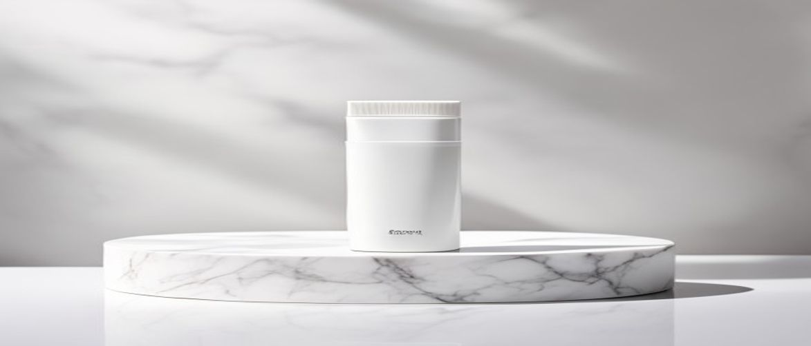

Are you searching for an effective yet gentle solution to transform your skincare routine, wondering, "what exactly is clinical cleanser and is it right for me?" The iS Clinical Cleansing Complex stands out as a highly respected, medical-grade option often recommended by dermatologists for its multi-faceted benefits.
This award-winning facial cleanser is more than just a basic wash; it's a meticulously formulated treatment designed to deeply cleanse pores, gently exfoliate, and prepare your skin for subsequent treatments without stripping its essential moisture or compromising the delicate skin barrier.
The iS Clinical Cleansing Complex is a clinical formula engineered to deliver a comprehensive cleansing experience, making it a cornerstone of many professional skincare routines.
The iS Clinical Cleansing Complex is remarkably versatile and ideal for individuals seeking a high-performance cleanser that addresses multiple skin concerns. It is particularly beneficial for those with acne-prone skin, oily skin, combination skin, or even mature skin looking for gentle yet effective exfoliation and pore refinement.
Its soothing properties also make it suitable for sensitive skin types, as it cleanses without causing irritation or disrupting the skin barrier, making it a staple in many professional skincare routines.
Understanding the active components within the iS Clinical Cleansing Complex reveals why this clinical formula is so effective and beloved by skincare professionals.
| Ingredient / Feature | Skin Benefit / Scent Role |
|---|---|
| Willow Bark Extract (Salix Alba Bark Extract) | Natural source of salicylic acid; provides gentle exfoliation, deep cleanses pores, and offers anti-inflammatory benefits. |
| Sugarcane Extract (Saccharum Officinarum Extract) | Natural source of glycolic acid; gently exfoliates to smooth skin, improve texture, and promote cell renewal. |
| Chamomile Flower Extract (Chamomilla Recutita) | Known for its soothing and calming properties; helps to reduce redness and irritation, making the cleanser suitable for sensitive skin. |
| Centella Asiatica Extract (Asiaticoside, Asiatic Acid, Madecassic Acid) | Promotes healing, reduces inflammation, and supports collagen production; often used for its restorative and protective benefits for the skin barrier. |
Willow Bark Extract is a natural beta-hydroxy acid (BHA) that gently exfoliates the skin, helping to decongest pores and reduce breakouts. It works by dissolving the bonds between dead skin cells, allowing them to shed more easily and revealing fresher skin beneath.
This ingredient also possesses anti-inflammatory properties, making it excellent for calming irritated skin and reducing redness associated with acne or other skin sensitivities.
Studies show that Salicylic Acid, derived from Willow Bark, is particularly effective for oily and acne-prone skin due to its ability to penetrate oil and clear pores.
Sugarcane Extract provides a natural source of alpha-hydroxy acids (AHAs), specifically glycolic acid. This ingredient offers chemical exfoliation, helping to improve skin texture, reduce the appearance of fine lines, and enhance overall skin radiance.
It works on the surface of the skin to loosen dead skin cells, promoting a smoother and more even complexion. Regular use can lead to a significant improvement in skin texture and tone.
To maximize the benefits of your iS Clinical Cleansing Complex and achieve optimal skin health, proper application is key to integrating it into your daily professional skincare routine.
When using a powerful clinical formula like the iS Clinical Cleansing Complex, it's crucial to avoid certain practices that could diminish its effectiveness or irritate your skin. Do not use extremely hot water, as it can strip your skin of natural oils and cause dehydration, nor should you scrub vigorously, which can lead to micro-tears and inflammation.
Additionally, avoid using abrasive tools or brushes daily, as the cleanser already provides gentle exfoliation; overuse can compromise your skin barrier.
Always perform a patch test when introducing a new medical-grade product to your routine, especially if you have hypersensitive skin, to ensure no adverse reactions occur.
Understanding the advantages and potential drawbacks of the iS Clinical Cleansing Complex can help you determine if this medical-grade cleanser aligns with your skincare needs and expectations.
Yes, the iS Clinical Cleansing Complex is highly effective for acne-prone skin. Its formulation includes Willow Bark Extract, a natural source of salicylic acid, which helps to deeply cleanse pores and gently exfoliate, reducing breakouts and preventing future congestion.
No, the iS Clinical Cleansing Complex is formulated without harsh sulfates, parabens, or phthalates. This makes it a gentler option for cleansing, particularly beneficial for those with sensitive skin or concerns about irritating ingredients.
For most skin types, the iS Clinical Cleansing Complex can be used twice daily, both morning and night, as the first step in your skincare routine. However, if you have extremely sensitive skin, starting with once a day might be preferable to gauge your skin's reaction.
While the iS Clinical Cleansing Complex is generally gentle, it is primarily designed for facial cleansing and may not be ideal for heavy eye makeup removal. For waterproof mascara or stubborn eye makeup, it's recommended to use a dedicated eye makeup remover beforehand to avoid unnecessary rubbing around the delicate eye area.
In conclusion, the iS Clinical Cleansing Complex stands as a testament to effective, clinical-grade skincare, offering a multifaceted approach to cleansing and skin improvement. Its blend of gentle exfoliants and soothing botanicals makes it an exceptional choice for those seeking to refine their skin texture, minimize pores, and maintain a healthy skin barrier without harshness.
Considering its benefits for a wide range of skin concerns and its dermatologist-backed formulation, the investment in this iS Clinical cleanser is undoubtedly worthwhile for anyone serious about elevating their skincare regimen today.
Have questions or a comment on the post? Send us a message and we will get back to you soon.